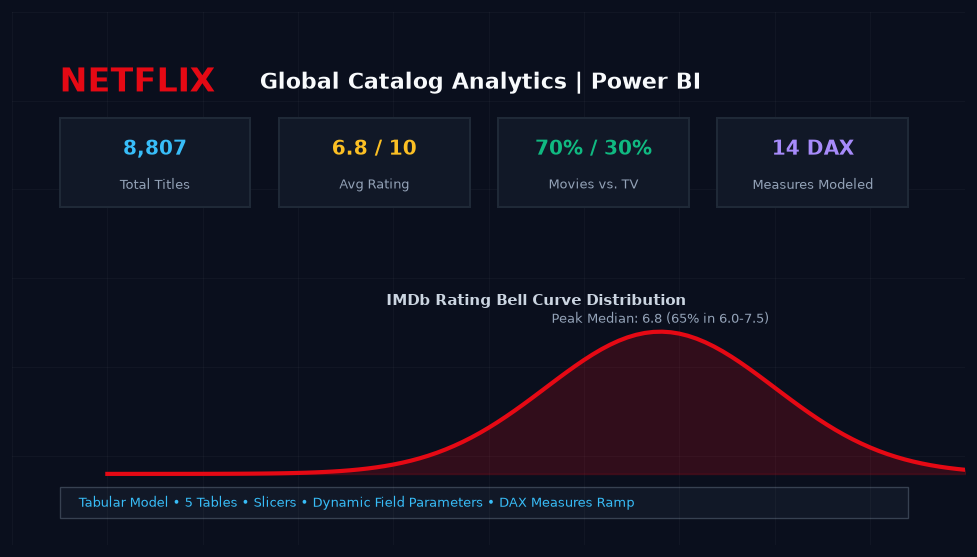
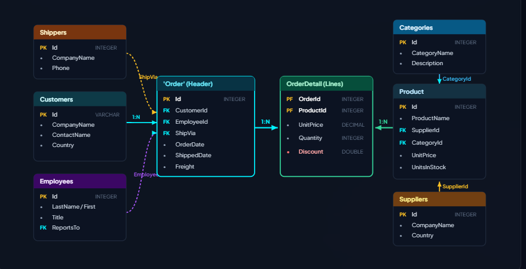
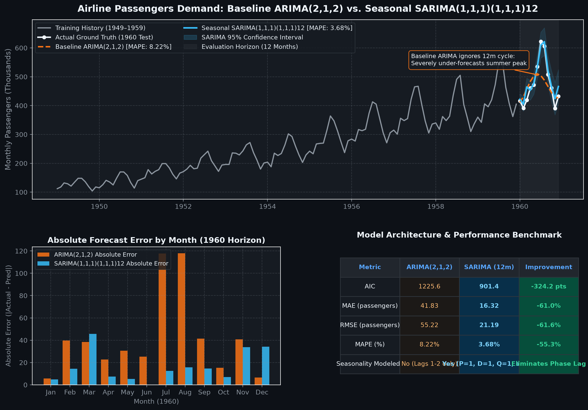
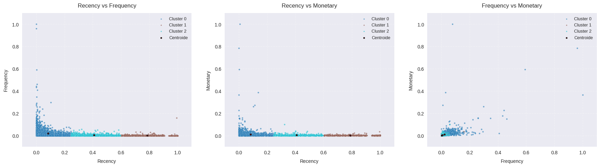
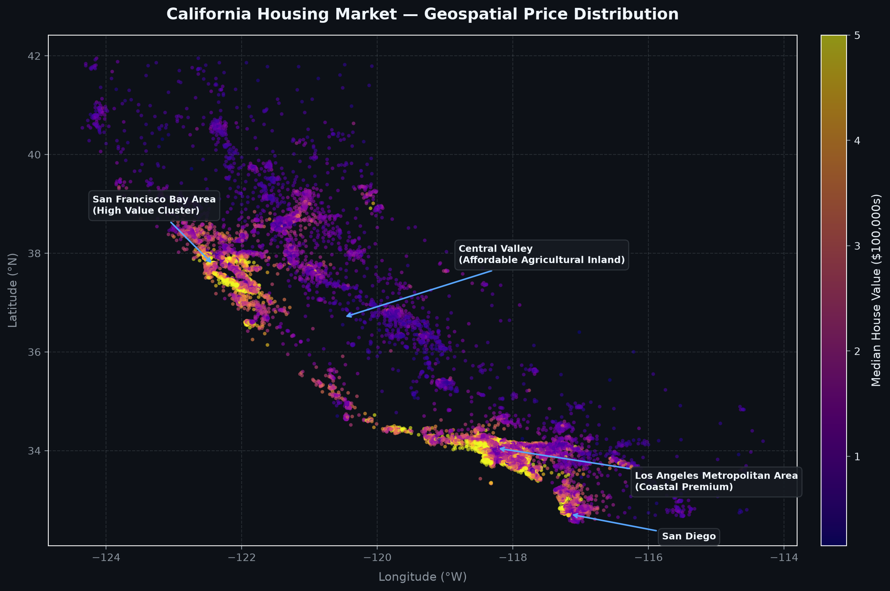

Christian David Vera Mendivelso
Data Scientist with a background in Business Administration and Data Science, focused on Python, SQL, Machine Learning, experimentation, and Business Intelligence. I build data-driven solutions that connect analytical methods with business problems.
Featured Data Science & Machine Learning Projects
End-to-end systems: Computer Vision, Machine Learning, and A/B Testing & Experimental Design.

ParkVision AI — Smart Parking Monitoring
Computer vision application that monitors parking spaces in real time using video feeds, automatically detecting occupied bays and recording usage patterns.
Explore System →
A/B Testing & Experimental Design (CUPED)
Statistical experimentation framework to evaluate digital product changes, determine required sample sizes, and accelerate test cycles using CUPED variance reduction.
View Methodology →
Customer Churn & Retention Economics
Supervised machine learning model to identify customer cancellation risk, combined with an economic cost-benefit analysis to determine the optimal retention strategy.
View Analysis →Business Intelligence & Core Analytics
Executive dashboards, SQL relational analytics, forecasting models, and customer intelligence.

Power BI — Netflix Global Catalog
Business intelligence dashboard analyzing global catalog distribution, release year trends, and content maturity ratings across international markets.
Open Dashboard →
SQL — Northwind Business Insights
Relational database analysis in SQLite assessing operational sales, employee performance, customer cohort retention, and inventory risk using structured SQL queries.
Explore Queries →
Time Series Forecasting (ARIMA)
Time series forecasting comparing classic ARIMA and seasonal SARIMA models to evaluate monthly passenger demand trends for operational planning.
View Forecast →
Customer Segmentation (K-Means)
Customer segmentation analyzing transaction recency, purchase frequency, and monetary spend (RFM) to identify behavioral user groups.
View Clusters →
Housing Price Regression
Multivariate linear regression model evaluating economic and geographic factors that influence median residential housing prices.
View Model →